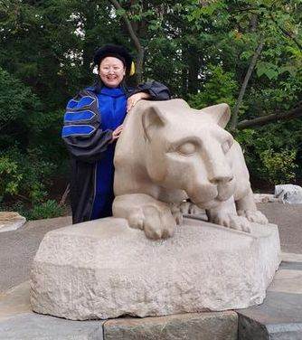
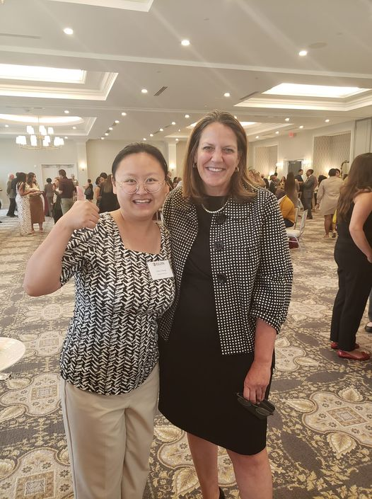

Welcome
Hi, I am Chris Chen, an Assistant Professor of Communication Design at Elon University. I earned my doctoral degree from Pennsylvania State University. Also, I have two master's degress at the Chinese University of Hong Kong and a background in TV and film production (B.A. in Hunan University).



PSU Graduate
First Day at Elon University
Welcome by President Book at Elon University